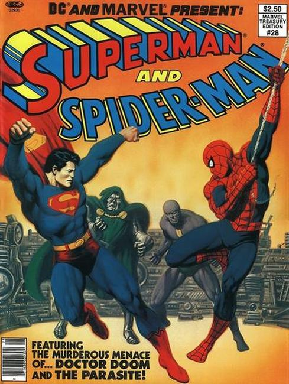

Marvel Treasury Edition is an American comic book series published by Marvel Comics from 1974 to 1981. It usually featured reprints of previously published stories but a few issues contained new material. The series was published in an oversized 10" x 14" tabloid (or "treasury") format and was launched with a collection of Spider-Man stories.

The series concluded with the second Superman and Spider-Man intercompany crossover. Marvel also published treasuries under the titles Marvel Special Edition and Marvel Treasury Special as well as a number of one-shots.